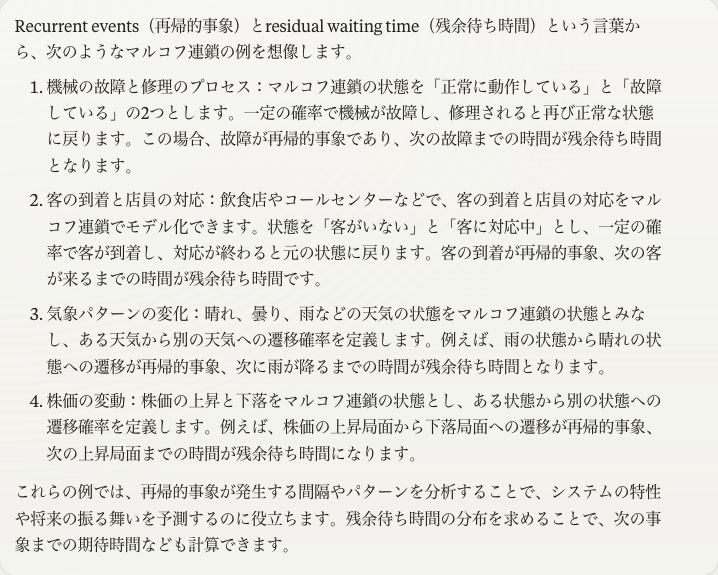

$$
%%% 演算子
%%% 線型代数学%%% 複素解析学 %%% 集合と位相
%%% 形式言語理論 %%% Graph Theory
%%% 多様体 %%% 代数 %%% 代数的位相幾何学 %%% 微分幾何学 %%% 函数解析 %%% 積分論%%% Fourier解析 %%% 数値解析
%%% 確率論%%% 情報理論 %%% 量子論 %%% 最適化 %%% 数理ファイナンス
%%% 偏微分方程式 %%% 常微分方程式 %%% 統計力学 %%% 解析力学
%%% 統計的因果推論 %%% 応用統計学 %%% 数理統計%%% 計量経済学
%%% 無限次元統計模型の理論%%% Banach Lattices
%%% 圏 %代数の圏 %Metric space & Contraction maps %確率空間とMarkov核の圏 %Sober space & continuous map %Category of open subsets %Category of sheave %Category of presheave, PSh(C)=[C^op,set]のこと %Convergence spaceの圏 %一様空間と一様連続写像の圏 %フレームとフレームの射 %その反対圏 %滑らかな多様体の圏 %Quiverの圏
%%% SMC %%% 括弧類%%% 予約語
%%% 略記
%%% 矢印類 $$
1 待ち時間の Markov 連鎖
1.1 モチベーション


(Feller, 1967, p. 381) 例 XV.2.(k)，(Kulik, 2018, p. 22) 例 1.3.6 などでも扱われている．
1.2 離散エルゴード定理
1.3 離散 Markov 連鎖の概念
1.4 エルゴード性
Feller, W. (1967). An introduction to probability theory and its applications: Vol. I (3rd ed.). Wiley, New York. https://www.wiley.com/en-us/An+Introduction+to+Probability+Theory+and+Its+Applications%2C+Volume+1%2C+3rd+Edition-p-9780471257080
Kulik, A. (2018). Ergodic behavior of markov processes: With applications to limit theorems (Vol. 67). De Gruyter: Berlin, Boston. https://doi.org/10.1515/9783110458930
Footnotes
(Kulik, 2018, p. 16) 定理1.2.5．↩︎